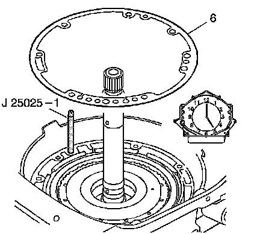
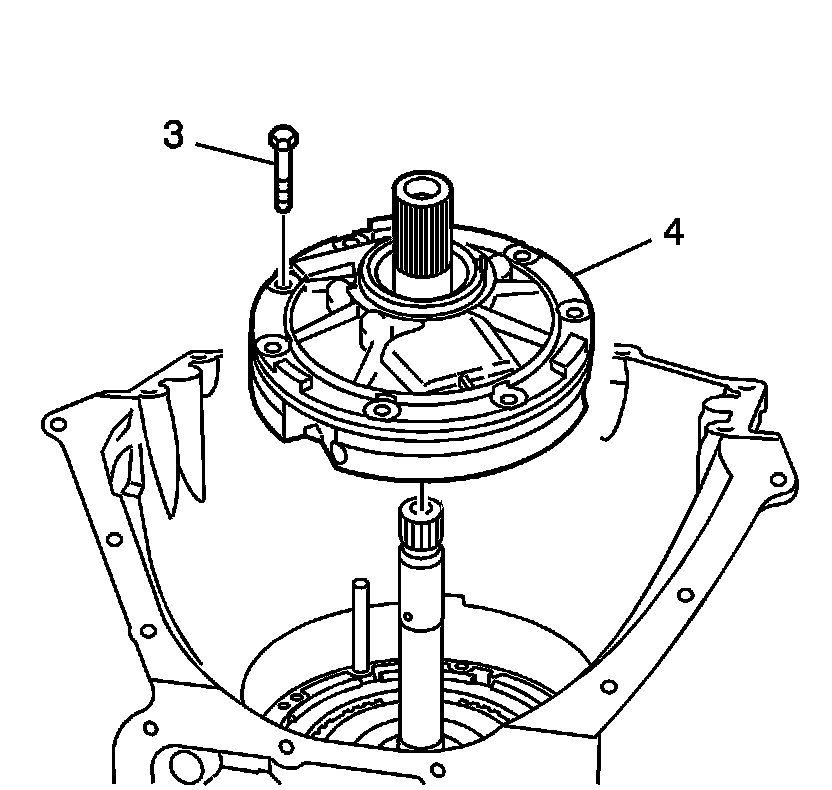
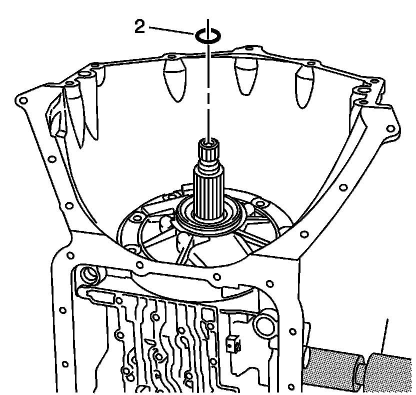

Transmission Oil Pump Assembly Installation
Transmission Oil Pump Assembly Installation
Tools Required
J 25025-1 Guide Pins

1. Install the J 25025-1 at the 12 o'clock and the 5 o'clock positions.
2. Install the transmission oil pump gasket (6).

Important: When installing the oil pump assembly (4), position the bolt holes closest together toward the bottom of valve body side of the transmission case assembly.
Important: If you cannot rotate the turbine shaft while lowering the oil pump assembly into place, then you have improperly installed the overrun clutch assembly, the fourth clutch assembly, the forward clutch assembly and/or the direct clutch assembly. These components have not indexed with all of the clutch plates. Correct the condition before installing the oil pump assembly.
3. Install the oil pump assembly (4) into the transmission case assembly.
4. Remove J 25025-1.
Notice: Refer to Fastener Notice.
5. Install the 7 transmission oil pump bolt and seal assemblies (3).
Tighten the bolts to 24 N.m (18 lb ft).

6. Install the turbine shaft front oil seal ring (2).